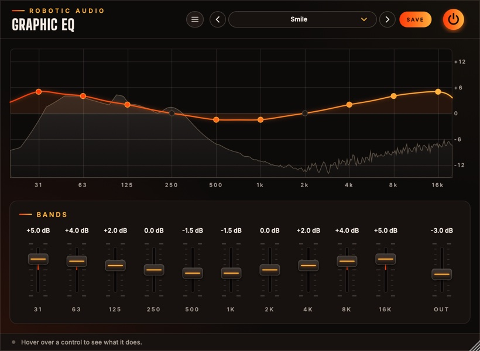

Graphic EQ
Ten sliders, one an octave from 31 Hz to 16 kHz, and a curve that really goes through every one of them. Push a slider and you hear exactly what it shows, over the live spectrum of what comes out. Draw the curve by sweeping across it, or set it slider by slider.
- 10 octave bands
- ±12 dB per band
- Curve through every slider
- Live spectrum
- No latency
- 9 factory presets
- AU · VST3 · Standalone

Quick start
Shape a sound in a minute.
Insert it
On a track, a bus or the master. At Default every band is at 0 dB and it does nothing.
Listen and look
The grey spectrum behind the curve is what comes out. Peaks that stick up are often where a cut helps.
Draw
Sweep the mouse across the curve to draw it: every band you pass follows. Or drag a slider or a dot.
Match the level
Boosts make it louder, which always sounds better. Use Out to bring the level back, then compare with the power button.
The window
The curve on top, the sliders below.
- Header
- The preset bar (previous, next, the list, SAVE), the power button (bypass) and the menu (three lines) with this manual. Click the logo for the version and credits.
- Curve
- What the EQ does to every frequency, with the output's spectrum behind it. See The curve.
- Bands
- Ten sliders, 31 Hz to 16 kHz, then Out.
- Tooltip strip
- Along the bottom: what the control under the mouse does.
The window can be resized: drag its bottom-right corner.
The curve
What you see is what you hear.
The horizontal axis is frequency (20 Hz to 20 kHz, logarithmic, one band per octave), the vertical one gain (±12 dB). The curve is the EQ's real response, drawn from the same filters the sound goes through.
- Dots
- One per band, at its centre: lit when the band is boosted or cut. Drag one up or down; the band's name and value show while you do.
- Drawing
- Sweep across the curve: each band you pass takes the height of the mouse. A small catch at 0 dB makes it easy to leave a band flat.
- Spectrum
- The output's spectrum, tilted so music looks roughly level, moving behind the curve. It settles when the sound stops.
Bands
Ten octaves and an output.
- 31 · 63 · 125
- Sub, kick and bass weight; 125 is also where boominess lives. ±12 dB
- 250 · 500
- Body and warmth; too much and it gets muddy or boxy. ±12 dB
- 1k · 2k · 4k
- Presence and attack: voices, guitars, the snap of a snare; too much is harsh. ±12 dB
- 8k · 16k
- Brightness and air; too much is hiss and sibilance. ±12 dB
- Out
- The level after the EQ, to match a boost or a cut. ±18 dB
Gains glide when you move them, so sweeps and automation never zipper or click. A band at 0 dB costs nothing, and the whole EQ rests while silence comes in.
Presets
Nine starting points, and room for your own.
| Preset | What it does |
|---|---|
| Default | Flat: nothing. |
| Smile | The classic "loudness" curve: lows and highs up, the middle down a little. |
| Warmth | More low mids, a softer top. |
| Air | A rising lift from 4 kHz up. |
| Clear the Mud | Cuts round 250 Hz. |
| Vocal Presence | Less low end, more 2–4 kHz. |
| Bass Boost | 31–125 Hz up. |
| Telephone | Only the middle left: a small, boxy speaker. |
| Lo-Fi Radio | A narrow, warm old radio. |
Press SAVE in the header to keep your own. The preset menu has Save As, Delete and Open Folder. An asterisk after the preset's name means you've changed something since loading it. Every slider is a host parameter and can be automated.
Recipes
Settings to start from; then use your ears.
Boost one band to +12 dB and listen as you move to the next; when it sounds worst, you've found it. Then cut that band 3–6 dB.
On the music bus: 1k and 2k down 2–3 dB. The voice comes forward without getting louder.
31 down 4 dB, 63 up 2 dB: the kick stays, the rumble goes.
Start from Telephone and automate Out and the 8k and 16k sliders back up into a drop.
Specifications
The numbers.
| Property | Value |
|---|---|
| Bands | 10, at 31, 63, 125, 250, 500 Hz, 1, 2, 4, 8 and 16 kHz (ISO octaves) |
| Filters | Peak filters (Q 1), their gains solved so the curve passes through every slider |
| Range | ±12 dB per band; output ±18 dB |
| Spectrum | 4096-point FFT of the output |
| Latency | None |
| CPU | Flat bands cost nothing; rests while silence comes in |
| Channels | Stereo (mono tracks work too) |
| Formats | AU, VST3, Standalone |